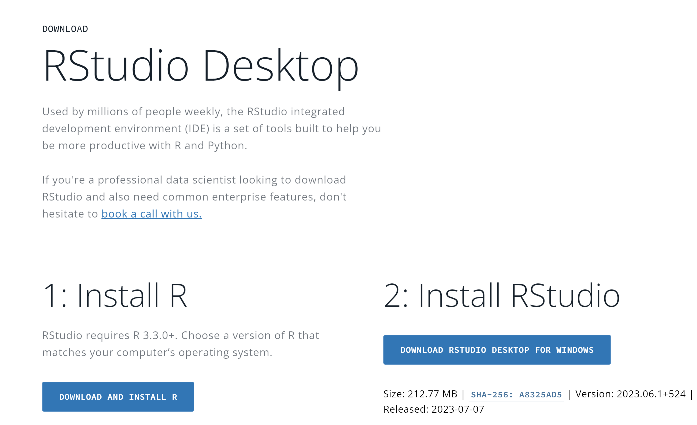
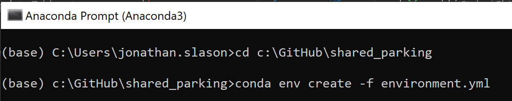
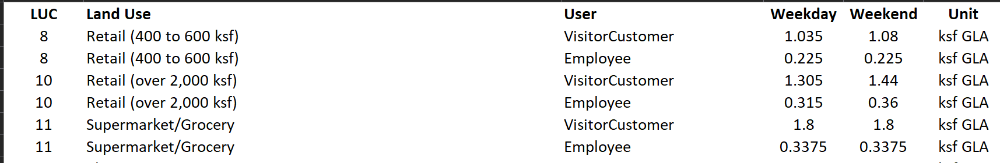
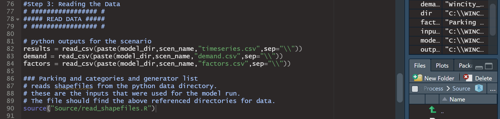
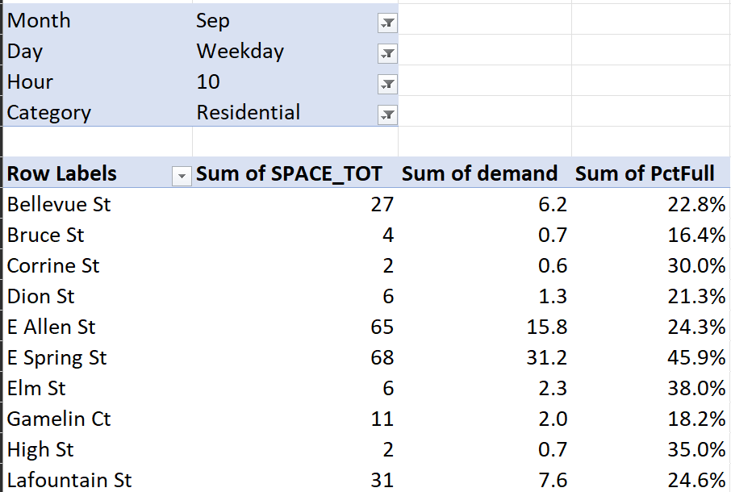
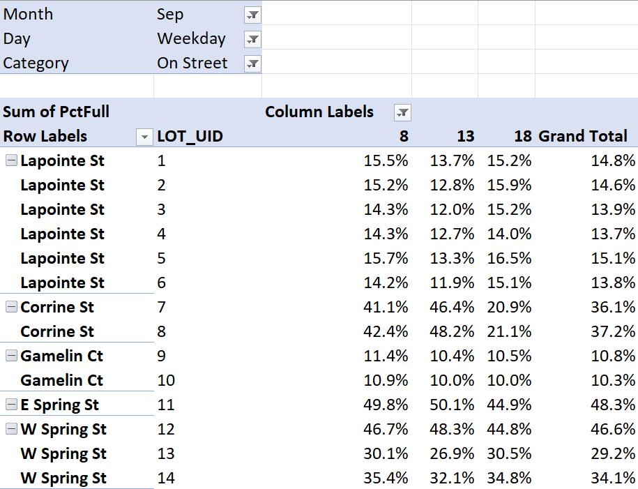

Introduction#
Background#
This user guide provides instructions for the Shared Use Parking Model (SUPM) tool developed by the Chittenden County Regional Planning Commission (CCRPC) with support from RSG. The SUPM tool models shared parking demand for specific geographic areas based on land use and adjustment factors by month, day of week, and time of day.
The SUPM uses parking demand factors from Shared Parking, Third Edition by the Urban Land Institute[^1] (ULI) are incorporated by default, although the tool is flexible to accept user specific inputs along with other parking demand factors. Users are expected to have purchased the data used in the model. This model provides a new mechanism to use the parking rates either from the ULI data or other locally collected data.
The SUPM uses open-source software in both Python and R software languages complemented by any GIS program that can generate a Shapefile with latitude and longitude location data for both the source of parking demand (i.e., land uses) and the parking lots (parking supply).
The SUPM is a unique and powerful tool that expands the methodology developed by the ULI. Rather than the typical ULI Shared Parking analysis as a many demand to one lot analysis, The SUPM tool evaluates multiple parking demands across multiple possible parking lots.
How To Use This Guide#
This guide sets out the process for developing the inputs for the SUPM, installing and running the SUPM tool, and using the post process visualization summary in Excel.
This guide provides chapters on:
-
Preparing SUPM inputs
-
Running the SUPM tool
-
Analyzing the results
-
Testing the effect of adding a new generator to an existing population of parking lots and generators
-
Refining the input data with real world observations
File names are in italics.
Tab names in an Excel file are in bold.
Using the SUPM#
This chapter sets out the process for installing the necessary software to run the SUPM.
Background Software#
Several pieces of software are necessary to develop the inputs and run the SUPM tool. These include the following:
- conda via Anaconda or Miniconda: Conda is an open-source package management and environment management system that simplifies the installation and management of software packages and dependencies across multiple programming languages. It allows users to create isolated environments to run different projects with specific package versions and configurations.
- GIS (qGIS, ArcGIS, ArcMap). GIS software (Geographic Information System) is a type of software designed for capturing, analyzing, managing, and presenting geographic data. It enables users to visualize spatial information, perform spatial analysis, create maps, and make informed decisions based on geographical data. QGIS is an open source GIS program while ArcGIS and ArcMap are proprietary ESRI products.
- Visual Studio and Extension for Kepler.GL - Optional
R and R Studio are for Post Processing - optional
- R. R is a free and open-source programming language and software environment primarily used for statistical computing and graphics. It provides a wide range of statistical and graphical techniques and has a large community of users and developers contributing to its extensive collection of packages.
- R Studio. RStudio is an integrated development environment (IDE) for the R programming language. It provides a user-friendly interface and various tools to enhance productivity, making it easier to write, run, and debug R code while offering features like code editing, data visualization, and package management.

Download the SUPM code#
The SUPM Source code is stored in a GitHub repository. In order to use the SUPM tool the user is required to download the code by cloning the repository or downloading the zip file of the repository from GitHub.
The GitHub repository has the following files:

The SUPM ‘Shared_Parking’ folder should be moved to the location on the local machine where it will be called. Typically, a location near to the root C: drive or in a My Documents location is used.
A typical SUMP run will produce a few hundred MB's of data.
Installation of the SUPM Tool#
The installation of the SUPM tool requires the use of setting up a python environment using the Anaconda python interface.
Use the Start menu to find the Anaconda Prompt. A command window opens. Using commands you need to navigate to the shared_parking folder.
Figure : Anaconda Prompt

For an example stored on the C drive in a GitHub folder
cd c:\GitHub\shared_parking
Once the command window is setup to point to the shared_parking folder, install the Shared_Parking environment.
conda env create -f environment.yml
Figure : Conda Environment Install

The environment loads the necessary supporting software packages into the Python environment so that the analysis can be completed.
Figure : Conda Python Environment (after)

Input Files#
The next chapter sets out the process for setting up the inputs. The model input files are comprised of three components:
-
Generators: the land uses that generate the demand for parking
-
Parking: the supply of parking spaces
-
Demand and Adjustment file: this is the ULI rates of parking demand by land use.
-
Python Configuration file
Generators (i.e., Land Uses) – GIS File#
The parking generator data are spatial datasets that are used to specify the land uses which are associated with a level of parking demand. The tool requires GIS shapefiles that include the specific land uses and the land use characteristics for any scenarios to be tested in the SUPM tool. The shapefile is created in a GIS program (e.g., ArcGIS).
Figure below - shows a sample of a Generator File
| GEN_UID | LUC | UNIT | Size | DUTYPE |
|---|---|---|---|---|
| 157 | 51 | units | 101 | MF |
The generator shapefile must have the following data fields:
- GEN_UID – Unique ID associated with each generator. mandatory.
- LUC – Land Use Code of a particular generator’s land use. This number must match a land use code in the Land Use Demand file and Adjustment Factors file. mandatory
- UNIT– The unit in which size is measured. The unit type must match the Land Use’s unit type in the Land Use Demand file. For residential uses it is often "units" or nonresidential it is "ksf GLA" mandatory
- Size – The size of the land use in the units specified. For example, number of housing units or the square footage (in 1,000 sq ft GLA) of a specific nonresidential use. mandatory
- DUType – SF single family & MF multifamily. mandatory
Other fields are application specific.
Parking Supply – GIS File#
The parking supply data are spatial datasets that are used to specify the characteristics of the parking lots. The tool requires GIS shapefiles that includes information pertaining to the parking lot, who may have access to the lot, and other aspects. The shapefile is created in a GIS program.
Sample parking generator lot:
| NAME | Avail_Space | FID_1 | Cost | RESTRICT | Map_park | Park_Type | Street |
|---|---|---|---|---|---|---|---|
| Lapointe Street | 21 | 1 | 1 | 3 | 158 | Surface | Lapointe St |
The parking supply shapefile has the following data fields:
- Name – Name of the parking location. optional
- FID_1 - Unique ID associated with each generator. mandatory
- Avail_Space – the number of parking spaces in the parking lot. mandatory
- Restrict – this code specifies who can park in the parking spaces. Between 0 and 7. mandatory
- Cost - the cost used in the utility function. mandatory
- Park_Type - application specific type of parking. optional
- Street - application specific name or location of parking. optional
Parking Demand and Adjustments.xlsx#
This Excel file contains parking demand ratios for the land uses in the Generators folder. The SUPM tool uses demand factors and adjustments from the second edition of Shared Parking, but different data can be used as long as it conforms to the same format. For example, if any local data is collected, the parking rates can be adjusted in this Excel file to reflect local conditions. The Parking Demand and Adjustment file includes all hours, months, and seasons of the year. The following fields are used within the Excel file to define the parking generation demand for the land uses.
- LUC – Land Use Codes. These numbers can be arbitrary, but they must match the land use codes in the Generators file (LUC column).
-
Land Use – Description of the type of land use. This column is not used in the tool.
-
User – Either “Visitor/Customer” or “Employee.” These two types of users have different parking demand ratios. In the case of housing, residents’ parking demand appears under “Employee.”
-
Weekday – Weekday demand ratio, the number of parking spaces per unit required at peak weekday times.
-
Weekend – Weekend demand ratio, the number of parking spaces per unit required at peak weekend times.
-
Unit – The units which correspond to the demand ratios. Most are are either units (in the case of residential) and ksf GLA in the case of nonresidential uses.
Sample data is shown below:

The Excel file includes the Land Use, Monthly parking demand factors, and a Time of Day (TOD) worksheet.
Restrict List (restrict_list.csv)#
The restrict list is a file designed to limit the land uses who are allowed to park in specific parking areas.
There are two XLSX that need to be used at this time.
restrict_list.csvis used for the restrictions 1 through 6.Restrict_list2.csvis used for the restriction code 7.
0: No restrictions
1: Restricted to single generator ID
2: Commercial only
3: Restricted to generators in lookup table
4: Same as code 3 but only available between 9am and 6pm weekdays
5: Metered parking. Adds cost to lot.
6: Same as 5 but only available between 9am and 6pm weekdays
7: Generator-specific lot access (e.g., gen 244 can only park in lot 48 and 49) . Need to use the Restrict_list2.csv
Restrict code 3 restricts specific Generators (GEN_UID) to be able to park in that lot. However, the demand (the Generator) could park elsewhere.

The Restrict Codes are used to inform which land uses can park in the specific parking lots.
Restrict code 7 creates a more explicit and constrained relationship which specifies which lot a generator parks in.
Configuration.YAML#
Python uses a configuration file to guide the collection of the input files and direct outputs to specific locations. This Configuration.yaml’ file is the necessary link between the data and the analysis. The file has several sections and areas for the user to input specific file names and folders for the parking analysis.
The file includes information on months to analyze, days of the week, hours of the day, etc.
- data_dir: data #this is the folder where the data inputs are stored. These data include:
-
parking generation shapefile
-
parking supply shapefile
-
Parking demand and adjustments file
-
Restricted parking lot file
-
output_dir: baseoutput #this is the name of the folder where the output from the SUPM will go.
-
factors_file: 'Parking Demand and Adjustments.xlsx'** #excel file with worksheets
-
monthly_sheetname: Monthly #worksheet name with monthly parking factors
-
daily_sheetname: LandUse #worksheet name with daily parking rates
-
hourly_sheetname: TOD #worksheet name with hourly parking rates
Other data is specified in the configuration file but shouldn’t need to be changed such as the name of the land use columns, and setting other variable names in the Parking Demand and Adjustments Excel file.
- Land use code Column: LUC
- User_col: User
- month_col: Month
- day_col: Day
- hour_col: Hour
- typical_str: Typical
The configuration file requires the name of the specific demand (i.e., Generator) file and the supply file. These files need to be in the "data_dir" folder.
-
demand_shapefile: WinCity_Calibratedbased.shp
-
supply_shapefile: WinCity_BaseCalibration_Supply.shp
Other data in the file shouldn’t need to be altered, but the YAML does provide flexibility on other key model parameters and inputs. Several of which are used in the calibration process to adjust parking rates and the attractiveness of certain lots.
Utility Function Factors#
The SUPM uses a Utility function to assign the parking demand of the land uses to the various potential lots. the function uses these parameters and the coefficients assigned in the Configuration.yaml file.
- distance_factor: 4.5
- capacity_factor: 1.0
- scarcity_factor: 1.0
- private_lot_factor: 2.5
- cost_factor: 1.5
Other Functions in Config#
The SUPM can work to re-allocate demand when it exceeds the capacity of a parking lot. Set the parameter to "True" or "False" if you will allow the demand to exceed certain parking lots capacity. It may be helpful to initially use the "False" setting when using the model, but note that some parking demand will be truncated and show up anywhere.
- redistribute_overflow: True
The Flagging capability is beneficial when a large area is being modeled. It can be used to specify in the Parking Supply file, the field, "flag" = "1" to include and "0" to exclude.
- lot_flag: True
Running the Tool#
Once the conda environment has been activated then the tool is ready for running. Enter the following command to run the tool:
- Run
python run_model.py -c tests/winooski_example/configuration.yamlto use the example configuration. This will generate output files for use in the post-processing R scripts. Note, the later part of the python code points to the location of the Configuration YAML file. Note: you may need to set the working directory to direct the path to the correct .yaml file.
Output Data and Results#
CSV outputs#
The Shared Parking Analysis Tool’s Post-Processing R Scripts are designed to extract data from the CSV output files are created after running the Python script. These include: This section describes the format of the output files generated by the Python SUPM:
-
Demand: Demand for individual lots.
-
Factors: Hourly adjustment factors for weekdays and weekends.
-
Gen_lots: Parking generators with generator and lot IDs.
-
Preference: Generates information for parking preferences.
-
Timeseries: A timeseries showing utilization by lot.
Post-processing#
The post-process Excel visualization file will be created by running the R script, “Post Process.R” in the Post Process folder. This is the main file that can run all other supporting scripts to analyze the outputs from the SUPM. Note, that required libraries will be called in the R script but may require installation before running the script. These libraries are similar to the packages that were installed during the building of the Shared_Parking environment in the Python setup.
The supporting R scripts called by the Post Process.R script are located within the subfolder titled “Source” in the R project directory. The Source directory contains the following supporting files:
- read_shapefiles.R: Open’s shapefiles of generated parking lots.
-
specific_gens_lots.R: Gets demand information for one or more generators or parking lots using generator and lot ID variables.
-
constraint check.R: Generates summary space constraints on parking lots and demand.
-
counts_analysis.R: Generates parking counts for on and off-street parking during weekdays and weekends.
-
demand_check.R: Estimates total parking unconstrained demand versus demand in the parking model.
Figure : post process step 1 - load packages

Running the post process will require defining the project type and editing directory selections within the script to correctly call and store files. The projects available for analysis include “Winooski_city” and “Winooski_ave.” The directory called from for “model_dir” should contain the output from Python scripts used in the SUPM. The directory called from “dir” should contain a folder titled “Outputs” for storing post processing results.
Figure : post process step 2 - define project & loading inputs

Figure : post process step 2 - define project, setting directories

Step 3 reads data outputs from the Python model and shapefile inputs used for the SUPM model run using the “read_shapefiles.R” script. The folder “Source” must be in the same directory as the R Project in order these scripts.
Figure : post process step 3 – read data

Step 4 analyzes the parking data to project capacity versus demand stored in usable output files. Run the constraint check section to plot demand vs capacity for both the model and unconstrained demand given the SUPM outputs.
Figure : post process step 4 – constraint check

Running the script file “counts_analysis.R” will develop counts for weekday and weekend to project demand by hour, day, and month. Land use codes can be adjusted for on-street shared parking as well.
Figure : post process step 4 – counts analysis

Running the last step will export an Excel output to the “Outputs” folder under the output directory.
Figure : post process step 5 – write output

post-processing output#
Post-processing will store an Excel file titled “Visualization.XLSX” to the chosen directory. The file contains the following tabs:
-
“Overall summaries” contains pivot tables showing high-level summaries with changeable filters.
-
“OnStreet 3 period” shows on-street parking utilization for hours 8:00, 13:00, and 18:00 by street.
-
“Single Street Pivot” shows parking demand and utilization parking over a 1-day period for a given street.
-
“parking_formatted” shows geographic information of parking lots.
-
“timeseries” contains raw data for parking utilization by street, time, and land use.
The first table in the “Overall summaries” worksheet shows the following data points for a for a given month, day (weekday vs weekend), and hour:
-
The total number of spaces (“Sum of SPACE_TOT”).
-
Total utilized spaces by land use type (“Sum of demand”).

figure 10: overall summaries output 1
In contrast, the second table, “OnStreet 3 Period,” can also be filtered by land use category and is analyzed at a lot-specific level. This table includes the same analyzed variables and percent utilization for each lot (“Sum of PctFull”).

figure 11: overall summaries output 2
The table in this worksheet shows utilization rates for each parking lot (“Lot_UID”) at hours 8:00, 13:00, and 16:00, organized by street. This also shows a grand total utilization rate for a 24-hour period. These can be filtered by month, day, and land use category.

figure 12: onstreet 3 period output
This worksheet shows aggregated parking utilization for a given street by hours 0:00 and 6:00-23:00. The table includes:
-
Total parking spaces (“Sum of SPACE_TOT”)
-
Utilized spaces/demand (“Sum of demand”)
-
Percent utilization (“Sum of PctFull”)
These observations can be filtered by month, day, and street.

figure 13: single street pivot output
The user should check these results for reasonableness. Do they generally agree with the user’s expectation? Do they agree with anecdotal data on this location? If not, the user should double check the inputs and consider if there are special cases in this area that do not conform well with the default demand and adjustment factors.
Calibration and Refining Input Data#
The SUPM tool uses a generic dataset of national data from Shared Parking. It should be used as a planning tool to understand the effects of shared parking, both where excess capacity may exist and where a new generator may require more parking than is currently available. Like all planning data, the demand and adjustment factors used here are not perfect, and the user should be careful when demand is shown to be close to supply.
There are a variety of reasons a user may want to change the demand and adjustments factors. A user may decide to use local data for time adjustment factors or use a higher generation rate for a particularly popular generator. The available land use codes may not cover a desired land use type. Shared Parking explains its methods for data collection and how to collect local data.
A good first step is to perform field counts at the times the SUPM tool indicates peak demand occurs. It may also be helpful to compare anecdotal data for particular times with what the tool’s output indicates. These observations may show that the tool is generally accurate, or over- or under-estimating peak demand. It is also possible that some stores are not open when the default factors are showing they have demand, e.g. restaurants that are not open after midnight.
If the user determines that the demand and adjustment factors need to be refined, the user should perform parking lot counts in accordance with the Shared Parking methodology. It may be possible to perform counts at only the times of highest demand and adjust the factors accordingly and thus avoid counting all 26 days of factors. Changing factors to reflect store hour hours will also help calibrate a particular area.
Tool Methodology#
The premise of the SUPM tool is that for each hour of the analysis it goes through an iterative process of:
-
Estimating the parking demand generated by each of the land uses in the model shapefile
-
Allocates that demand based on a utility function subject to size constraints and restrictions on which land uses can part in which lots.
The SUPM tool uses the parking demand estimates for each land use from the Urban Land Institute’s Shared Parking guide.
The SUPM tool calculates each hour of demand independently, using the hourly factors from Shared Parking. This aggregate approach avoids the need to estimate the individual parking behaviors of each individual vehicle in the network and rather model the overall demand at each time period separately.
The analysis considers:
-
Time of Day: 6 AM – Midnight
-
Day: Weekday or Weekend
-
Time of Year: all 12 months and December after Christmas (termed “Late December”)
[^1]: Smith, Mary S. Shared Parking, Third Edition. Washington, D.C.: ULI-the Urban Land Institute and the International Council of Shopping Centers, 2020.